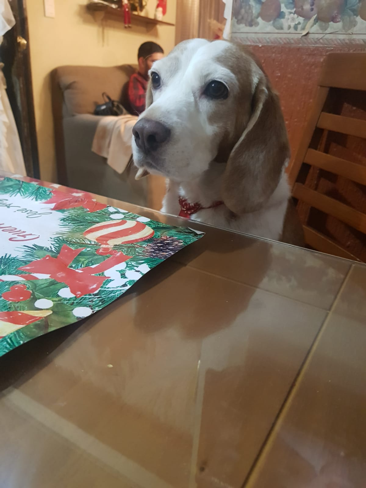
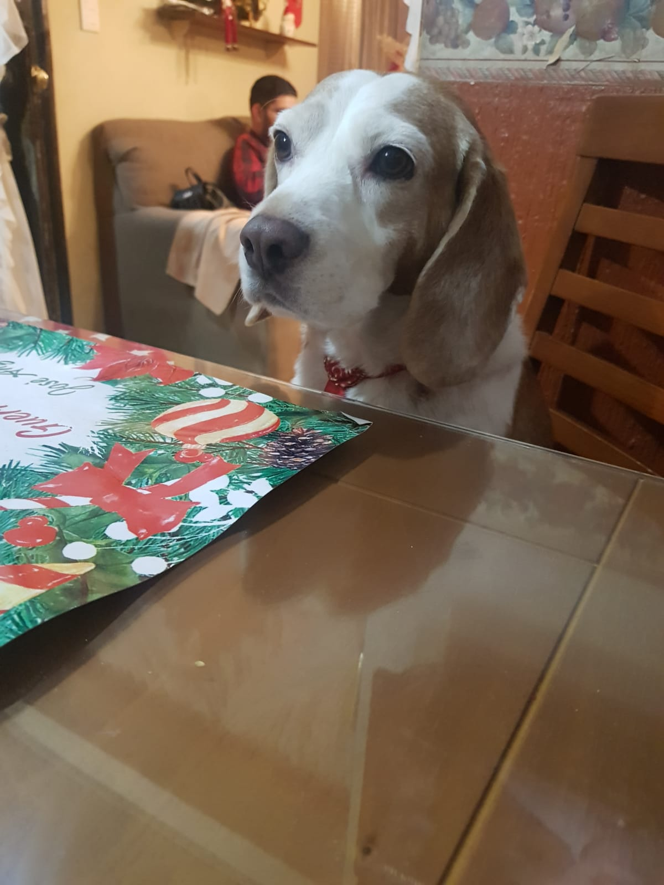
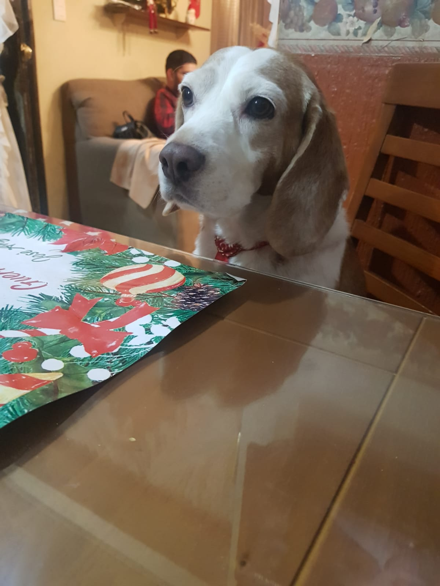

Cantantes favoritos: José José, Luis Miguel, The strokes y Joji
Musicas favoritas: True Love Waits, Selfless, Like You Do, Razorblade y Sanctuary
Peliculas favoritas: Ventajas de ser invisible (AMO), Eterno Resplandor de una mente sin recuerdos, 500 días con ella y The Batman
Originario de Culichi town y nacido en un barrio de nacos, salio una persona maravillosa llamada Jose Angel que quiere mucho a sus tilines wtf, bueno x, esta persona fabulosa hizo estas paginas para perder tiempo de su vida y por que los quiere mucho, algo que destaca este tilin es: 1.- No te puede odiar por que te quiere, osea un simio total
2.- ¿?
3.- Te quiere de verdad
Algo que te dejara con la boca abierta es que este tilin no tiene NINGUN DEFECTOOO!!!!! increible esta persona, dejando el bait de lado estos son: 1.- Sobrepiensa todo y cuando digo todo es todo, XD que tonto
2.- Tiene miedo el miedo que le digan chiapaneco
3.- Es inseguro en todo, echenle una mano para que no lo sea
4.- Piensa que el amor verdadero existe, pobre iluso :(
Tambien este chicuelo tiene mascotas WOOW!!! pero solo 1 por que el otro no es suyo ;(

Tambien este chico tiene apodos ¿QUEE!!? no lo sabias sus apodos son los mejores wacha y son: 1.- Nachurro
2.- Tonturro
3.- Ratacho
4.- Mensacho
5.- Nacho
6.- Pendejo
7.- Fan de moris (Nadie me dice asi lo se pero se me antoja poner mi propio apodo, chupenla)
8.- Tatin <3

 
